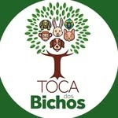
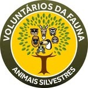

Ação Extensionista • Faculdade Dom Bosco
O Medo Ameaça.
O Conhecimento Protege.
A desinformação é um dos maiores perigos para os animais silvestres. Junte-se a nós em uma jornada de educação, desconstrução de mitos e promoção da cultura de paz.


A Crise
Silenciosa
Enquanto você lê isso, um animal silvestre está sofrendo. Os dados revelam uma emergência que poucos enxergam.
animais silvestres traficados por ano no Brasil — o maior do mundo
Fonte: IBAMA / RENCTASdas matas originais do Rio Grande do Sul já foram destruídas
SOS Mata Atlântica, 2023espécies de vertebrados ameaçadas de extinção no RS
SEMA/RS, 2022dos animais vítimas de tráfico sobrevivem ao retorno à natureza
RENCTAS / IBAMAde aumento nos resgates da RMPA nos últimos 3 anos
SMAMS / POA, 2024"O Brasil abriga a maior diversidade biológica do planeta e, ao mesmo tempo, é o maior mercado clandestino de animais silvestres das Américas. A destruição não faz barulho — ela acontece em silêncio, longe dos olhares."
— RENCTAS, Relatório Nacional sobre o Tráfico de Fauna Silvestre
Quem Somos
O Amigos da Vida Animal é um grupo de extensão acadêmica da Faculdade Dom Bosco de Porto Alegre, nascido da disciplina Projeto Integrador Salesiano — Cultura de Paz e Não-Violência.
Nosso símbolo representa nosso compromisso: uma mão que acolhe e protege a fauna silvestre local, simbolizada pelo sagui e pela coruja. Acreditamos que a verdadeira harmonia social só é possível quando reconhecemos o valor de todas as formas de vida.
A desinformação e os preconceitos sobre animais silvestres frequentemente resultam em maus-tratos e violência. Queremos mudar essa realidade promovendo conhecimento correto, empatia e respeito à biodiversidade, em sintonia com os princípios de paz defendidos pela UNESCO e com a Lei nº 9.795/1999 de Educação Ambiental.
Nossa Missão
- Promover a cultura de paz e não-violência com os animais
- Desmistificar crenças e preconceitos sobre a fauna silvestre
- Educar sobre comportamentos corretos diante de animais silvestres
- Conectar a comunidade com recursos e profissionais de resgate
- Apoiar a ONG Toca dos Bichos com arrecadação e divulgação

🏥 Clínica Veterinária Toca dos Bichos
Fundada em abril de 1987 na Vila do IAPI, Porto Alegre, foi a primeira clínica veterinária de Porto Alegre a atender animais domésticos, exóticos e silvestres. Pioneira como o bairro ecológico onde se localiza.
Em 2016 criou o Núcleo Educacional e em 2017 institucionalizou o projeto Voluntários da Fauna — ONG que reabilita animais silvestres na RMPA.

🐯 Voluntários da Fauna
ONG sem fins lucrativos que reabilita animais silvestres. Iniciativa da Toca dos Bichos, atua com resgates e reabilitação de fauna silvestre em Porto Alegre e região.
Nossa Ação
Palestra: Fauna Silvestre, Cultura de Paz e Não-Violência
Uma conversa aberta sobre como conviver de forma segura e respeitosa com os animais silvestres da nossa região. Desmistificaremos mitos, apresentaremos orientações práticas e discutiremos o impacto das nossas ações na biodiversidade.
Biblioteca Animal
O que fazer ao encontrar estes animais?
Fauna em Números
Dados oficiais do SALVE/ICMBio — Lista de Espécies da Fauna Brasileira Ameaçadas de Extinção (2026)
Espécies ameaçadas por grupo taxonômico (CR+EN+VU)
⚠ Estes são os números de uma única região metropolitana. No Brasil inteiro, estima-se que mais de 38 milhões de animais silvestres são capturados ilegalmente por ano — e apenas uma fração chega a ser resgatada.
Espécies Ameaçadas por Grupo SALVE/ICMBio 2026
Categorias de Ameaça IUCN SALVE/ICMBio 2026
Espécies Ameaçadas por Bioma SALVE/ICMBio 2026
Mapa de Ocorrências — RMPA
Dados de categorias: SALVE/ICMBio (salve.icmbio.gov.br). Mapa de ocorrências: fins educativos, RMPA. Clique nos pontos para detalhes.
Referência: ICMBio, 2026. Sistema de Avaliação do Risco de Extinção da Biodiversidade – SALVE. Disponível em: https://salve.icmbio.gov.br/. Acesso em: 20 de maio de 2026.
Dúvidas Frequentes
Respostas para as perguntas mais comuns sobre fauna silvestre e como agir.
Não toque no animal. Mantenha distância segura e não tente socorrê-lo por conta própria. Anote a localização exata e entre em contato imediatamente com o CRAS (Centro de Reabilitação de Animais Silvestres) da SMAMS, o Corpo de Bombeiros (193) ou a Polícia Ambiental (190).
Profissionais capacitados saberão manipular o animal corretamente, evitando estresse adicional e risco de transmissão de doenças.
Não. Alimentar animais silvestres com comida humana é um dos maiores erros que podemos cometer. Biscoitos, pão, frutas processadas e doces causam doenças metabólicas e desnutrição nesses animais.
Além disso, os animais passam a depender da oferta humana de alimento, perdendo instintos naturais e podendo se tornar agressivos em busca de comida. A melhor forma de amar um animal silvestre é observá-lo de longe e deixar que ele encontre seu próprio alimento na natureza.
Não toque, não tente capturar e não aja por conta própria. Feche o cômodo onde o morcego está e acione o CRAS, o Corpo de Bombeiros (193) ou a Vigilância Sanitária para fazer a remoção de forma segura.
Essa precaução é importante tanto para proteger o animal quanto para evitar eventuais riscos sanitários às pessoas. Morcegos são fundamentais para o ecossistema — são os maiores polinizadores noturnos do Brasil.
Em geral, não. A Lei de Crimes Ambientais (Lei nº 9.605/98) proíbe a captura, criação ou manutenção de animais silvestres sem autorização do IBAMA. Quem mantém um animal silvestre irregularmente pode ser multado e responder criminalmente.
Se você encontrou um animal e está cuidando dele, entre em contato com o IBAMA ou CRAS para regularizar a situação ou encaminhar o animal para reabilitação.
Pequenas ações fazem grande diferença:
• Reduza o uso de venenos e pesticidas em quintais e jardins
• Instale bebedouros com água limpa para pássaros
• Plante árvores e plantas nativas da Mata Atlântica
• Evite soltar fogos de artifício que assustam e machucam animais
• Compartilhe informações corretas sobre fauna silvestre
• Apoie ONGs de proteção animal com doações de ração e materiais
Não, o gambá é inofensivo e extremamente benéfico! Ele é imune ao veneno de cobras e consome até 5.000 carrapatos por semana, sendo um aliado natural no controle de pragas.
Se aparecer em sua casa, respeite sua presença — ele provavelmente está de passagem. Nunca use veneno para afastá-lo: além de ilegal, prejudica toda a cadeia alimentar local.
Apoie a Causa
Sua participação garante que mais animais silvestres sejam resgatados, reabilitados e devolvidos à natureza.
Doe Ração e Itens
A ONG Toca dos Bichos precisa de ração para animais, medicamentos, gaiolas de transporte, toalhas velhas e materiais de limpeza. Sua doação chega diretamente a quem cuida desses animais.
Ver como entregarDoe para os Voluntários da Fauna
ONG sem fins lucrativos que reabilita animais silvestres — iniciativa da Toca dos Bichos. Aceitam doações via Pix para manter a estrutura de reabilitação e cuidados.
Voluntariado
Participe como voluntário em atividades de educação ambiental, eventos de conscientização e ações de divulgação. Toda ajuda é bem-vinda, independente da área de conhecimento.
Quero ser voluntárioDivulgue
Compartilhe nossas informações e ajude a conscientizar mais pessoas. Siga os perfis no Instagram e espalhe o conhecimento sobre convivência harmoniosa com a fauna silvestre.
Contatos Úteis
Números para emergências com fauna silvestre e órgãos ambientais
🚨 Emergência
🐾 Fauna Silvestre — Porto Alegre
🏛️ Órgãos Estaduais e Federais
⚠️ Importante: Alguns números podem sofrer alterações. Ao encontrar um animal silvestre, acione sempre o Corpo de Bombeiros (193) ou a Polícia Ambiental (190), disponíveis 24 horas. Nunca tente capturar ou manipular o animal sem orientação profissional.
Siga no Instagram
Acompanhe nossas publicações e os perfis dos nossos parceiros sobre fauna silvestre e proteção animal.